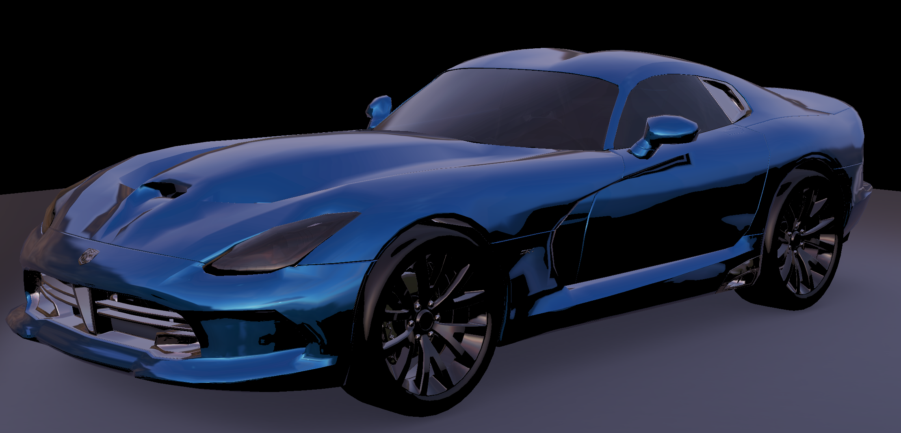

ThresholdEffect Class
(Kuesa::ThresholdEffect)Post-processing effect showing only pixels brighter than a specified value. More...
| Header: | #include <Kuesa/ThresholdEffect> |
| Since: | Kuesa 1.0 |
| Inherits: | Kuesa::AbstractPostProcessingEffect |
This class was introduced in Kuesa 1.0.
Properties
- threshold : float
Public Functions
| float | threshold() const |
Reimplemented Public Functions
| virtual Kuesa::AbstractPostProcessingEffect::FrameGraphNodePtr | frameGraphSubTree() const override |
| virtual void | setInputTexture(Qt3DRender::QAbstractTexture *texture) override |
Public Slots
| void | setThreshold(float threshold) |
Signals
| void | thresholdChanged(float threshold) |
Detailed Description
ThresholdEffect is a post-processing effect that passes through any pixel above a certain brightness value and sets all others to black.
#include <Qt3DExtras/Qt3DWindow> #include <ForwardRenderer> #include <SceneEntity> #include <ThresholdEffect> Qt3DExtras::Qt3DWindow win; Kuesa::SceneEntity *root = new Kuesa::SceneEntity(); Kuesa::ForwardRenderer *frameGraph = new Kuesa::ForwardRenderer(); Kuesa::ThresholdEffect *thresholdEffect = new Kuesa::ThresholdEffect(); thresholdEffect->setThreshold(0.5f); frameGraph->addPostProcessingEffect(thresholdEffect); win->setRootEntity(root); win->setActiveFrameGraph(forwardRenderer); ...
Property Documentation
threshold : float
This property holds the brightness value used as a cut-off
This value is used to determine how bright a pixel needs to be to pass the threshold.
| Threshold 0.12 | Threshold 0.35 |
|---|---|
|  |  |
Access functions:
| float | threshold() const |
| void | setThreshold(float threshold) |
Notifier signal:
| void | thresholdChanged(float threshold) |
Member Function Documentation
[slot] void ThresholdEffect::setThreshold(float threshold)
Sets the threshold value to threshold.
Note: Setter function for property threshold.
See also ThresholdEffect::threshold.
[override virtual] Kuesa::AbstractPostProcessingEffect::FrameGraphNodePtr ThresholdEffect::frameGraphSubTree() const
Returns the frame graph subtree corresponding to the effect's implementation.
See also AbstractPostProcessingEffect::frameGraphSubTree.
[override virtual] void ThresholdEffect::setInputTexture(Qt3DRender::QAbstractTexture *texture)
Sets the input texture for the effect to texture.
See also AbstractPostProcessingEffect::setInputTexture().
float ThresholdEffect::threshold() const
Returns the current threshold.
Note: Getter function for property threshold.
See also ThresholdEffect::setThreshold.